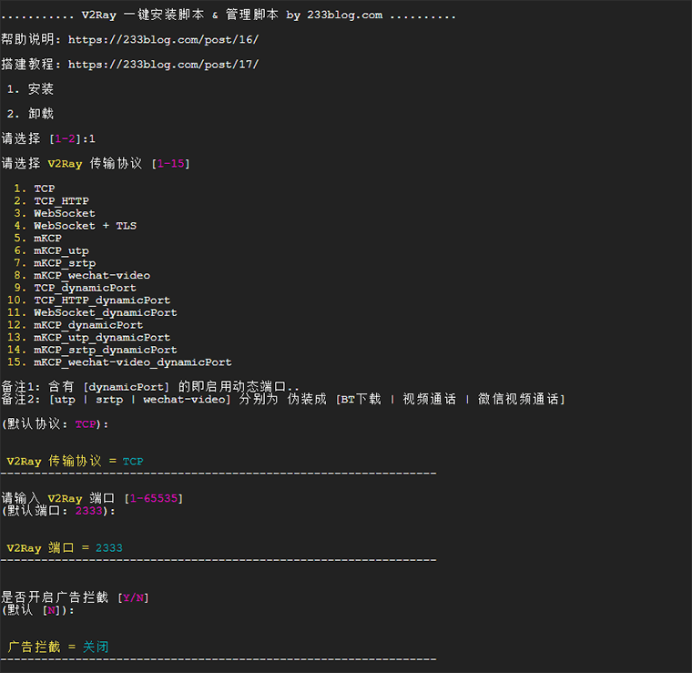
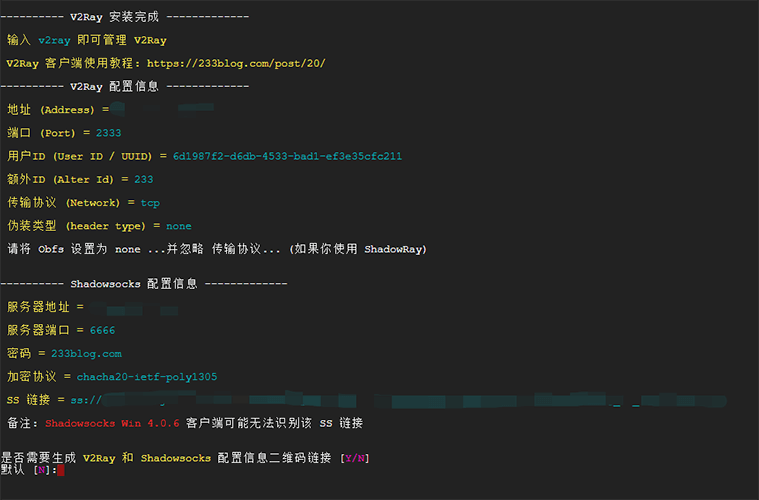

全能翻墙工具 - V2Ray
1. V2Ray 简介
V2Ray(Project V) 相对于 Shadowsocks，V2Ray 更像全能选手，拥有更多可选择的协议 / 传输载体 (Socks、HTTP、TLS、TCP、mKCP、WebSocket )，还有强大的路由功能，不仅仅于此，它亦包含 Shadowsocks 组件，你只需要安装 V2Ray，你就可以使用所有的 V2Ray 相关的特性包括使用 Shadowsocks，由于 V2Ray 是使用 GO 语言所撰写的，天生的平台部署优势，下载即可使用。
2. V2Ray 上手
2.1 服务端
除了使用第三方提供的V2Ray节点外，相信小伙伴们已经迫不及待的想自建服务器，小试身手了，话不多说，这就操练起来吧...
系统要求：Ubuntu 14+ / Debian 7+ / CentOS 7+
$ sudo -i
$ cp /usr/share/zoneinfo/Asia/Shanghai /etc/localtime
$ bash <(curl -s -L https://233yes.com/v2ray.sh)
按照提示安装即可... 
配置 Shadowsocks(可选)
安装完成 
常用操作
| 操作 | 命令 |
|---|---|
| v2ray info | 查看 V2Ray 配置信息 |
| v2ray config | 修改 V2Ray 配置 |
| v2ray link | 生成 V2Ray 配置文件链接 |
| v2ray infolink | 生成 V2Ray 配置信息链接 |
| v2ray qr | 生成 V2Ray 配置二维码链接 |
| v2ray ss | 修改 Shadowsocks 配置 |
| v2ray ssinfo | 查看 Shadowsocks 配置信息 |
| v2ray ssqr | 生成 Shadowsocks 配置二维码链接 |
| v2ray status | 查看 V2Ray 运行状态 |
| v2ray start | 启动 V2Ray |
| v2ray stop | 停止 V2Ray |
| v2ray restart | 重启 V2Ray |
| v2ray log | 查看 V2Ray 运行日志 |
| v2ray update | 更新 V2Ray |
| v2ray update.sh | 更新 V2Ray 管理脚本 |
| v2ray uninstall | 卸载 V2Ray |
2.2 客户端
V2Ray 搭建好了，自然要配置客户端使用咯~
V2Ray支持 Windows/ mac OS/ Linux/ Android/ iOS 等主流平台。
除Linux外，所有客户端都是简单的图形界面操作，在此不再赘述。有不明白读者，点击参考以上连接即可。